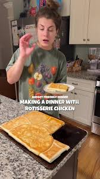

Home
Sheet Pan Chicken Enchiladas

A screenshot from Karissa Stevens' tiktok, Making A Dinner With Rotisserie Chicken, featuring family-favorite sheetpan chicken enchiladas quesadillas.
This recipe is perfect if you have leftover chicken or a rotisserie. It's quick and hands off once you add the filling.
Just put in the oven and put your feet up, 25 minutes later and you've got 6 servings. Kids and adults both love it, and it's easy to adjust to your preferences.
Ingredients
- leftover rotisserie chicken
- can of enchilada sauce (or make at home)
- 1 block of cream cheese, softened
- can of black beans, drained and rinsed
- 8 burrito-sized flour tortillas
- 4 oz. of cheddar cheese (half a block)
Steps
- Preheat oven to 400 degrees Fahrenheit. Shred the chicken, and mix with enchilada sauce, cream cheese, and black beans.
- Spray a half sheet sized sheetpan with cooking spray then layer 6 tortillas on it. Cover the bottom, with some overhang.
- Grate half the cheddar (2 oz) over the tortillas, then spoon the chicken mixture over.
- Place another 2 tortillas on top, then fold the sides in to create a closed envelope. Spray with more cooking spray.
- Place sheetpan on top to weigh it down and bake for 25 minutes.
Home